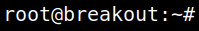

5.3 Log into the shell with password
1. Login into the new shell from your Kali Machine.
cyber@breakout
:
~
$su
-l
2. Type the password.
Password: “
Ts&4&YurgtRX(=~h
”
Output:

Now you're “root”.
Index